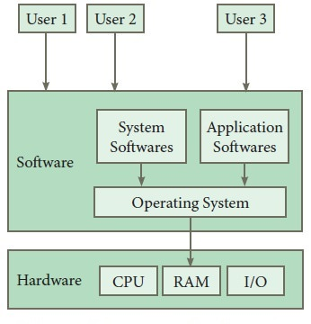

Operating System
Introduction
An operating system (OS) is the program that, after being initially loaded into the computer by a boot program, manages all of the other application programs in a computer.
The application programs make use of the operating system by making requests for services through a defined application program interface (API).
In addition, users can interact directly with the operating system through a user interface, such as a command-line interface (CLI) or a graphical UI (GUI).

Why use an operating system?
An operating system brings powerful benefits to computer software and software development.
Without an operating system, every application would need to include its own UI, as well as the comprehensive code needed to handle all low-level functionality of the underlying H/W.
Instead, many common tasks, such as sending a network packet or display, can be offloaded to system software that serves as an intermediary between the applications and the hardware.
The system software provides a consistent and repeatable way for applications to interact with the hardware without the applications needing to know any details about the hardware.
Once installed, the operating system relies on a vast library of device drivers to tailor OS services to the specific hardware environment.
Thus, every application may make a common call to a storage device, but the OS receives that call and uses the corresponding driver to translate the call into actions (commands)
needed for the underlying hardware on that specific computer.
What are the functions of an operating system?
An operating system provides three essential capabilities:
1. It offers a UI through a CLI or GUI;
2. It launches and manages the application execution;
3. It identifies and exposes system hardware resources to those applications -- typically, through a standardized API.
Additionally, an operating system can perform the following services for applications:
In a multitasking operating system, where multiple programs can be running at the same time, the OS do multi-tasking/ multi-threading.
It handles input/output (I/O) to and from attached hardware devices, such as hard disks, printers and dial-up ports. (Device management)
It sends messages to each application or interactive user -- or to a system operator -- about the status of operation and any errors that may have occurred.
It can offload the management of batch jobs -- for example, printing -- so that the initiating application is freed from this work.
On computers that can provide parallel processing, an operating system can manage how to divide the program so that it runs on more than one processor at a time.
Kernel
The kernel is a computer program at the core of a computer's operating system and generally has complete control over everything in the system.
It is the portion of the operating system code that is always resident in memory and facilitates interactions between hardware and software components.
A full kernel controls all hardware resources (e.g. I/O, memory, cryptography) via device drivers, arbitrates conflicts between processes concerning such resources,
nd optimizes the utilization of common resources e.g. CPU & cache usage, file systems, and network sockets.
Functionalities provided by OS
1. Process management
2. Memory management
3. Device management
4. Network management
5. Security